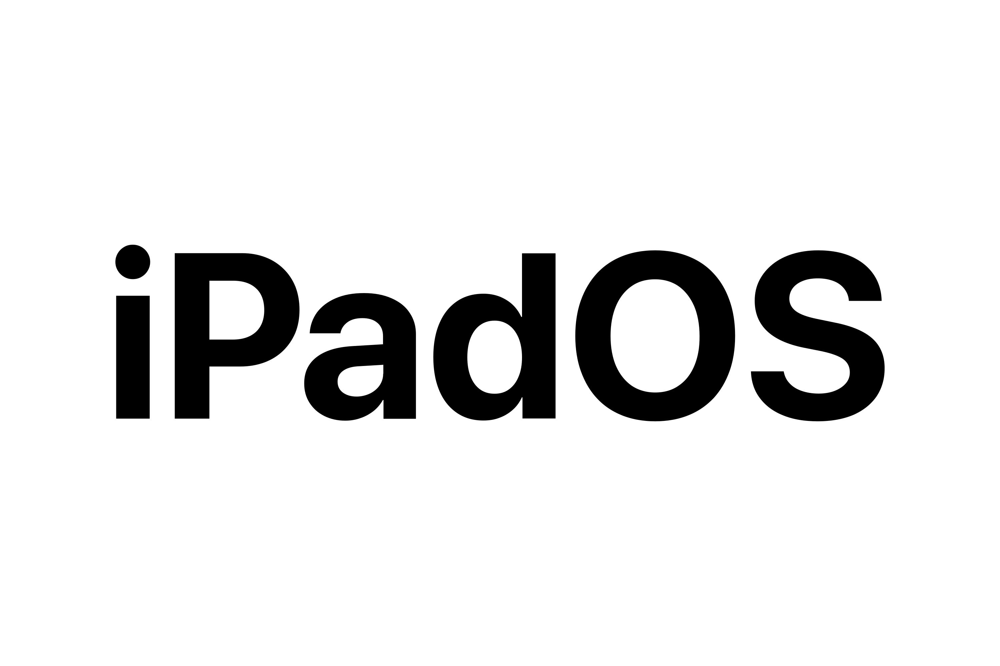
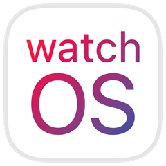
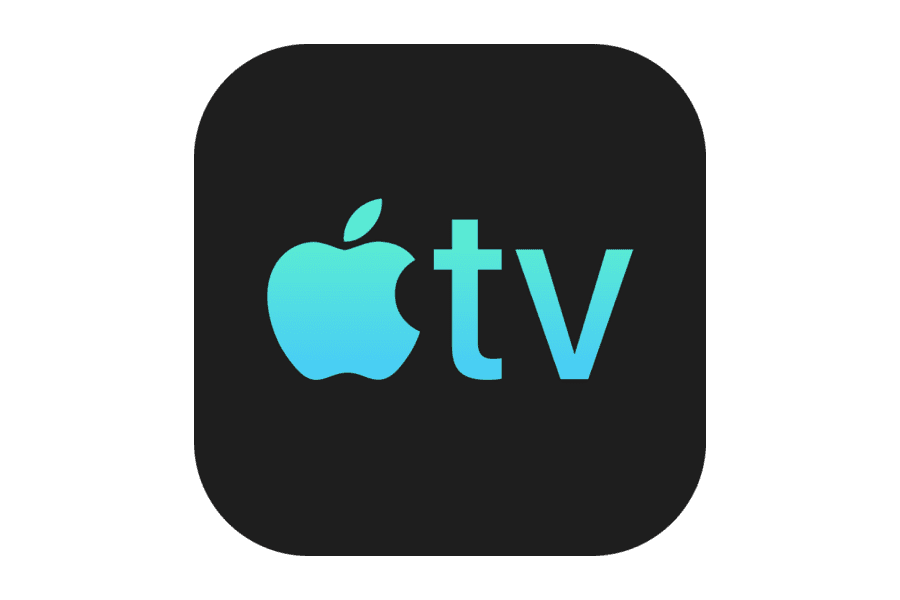
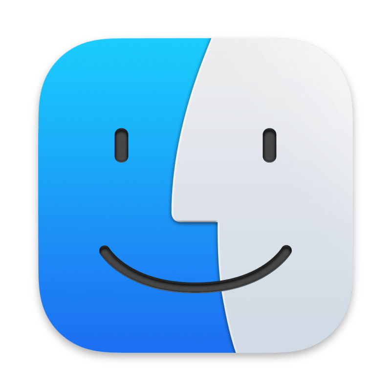
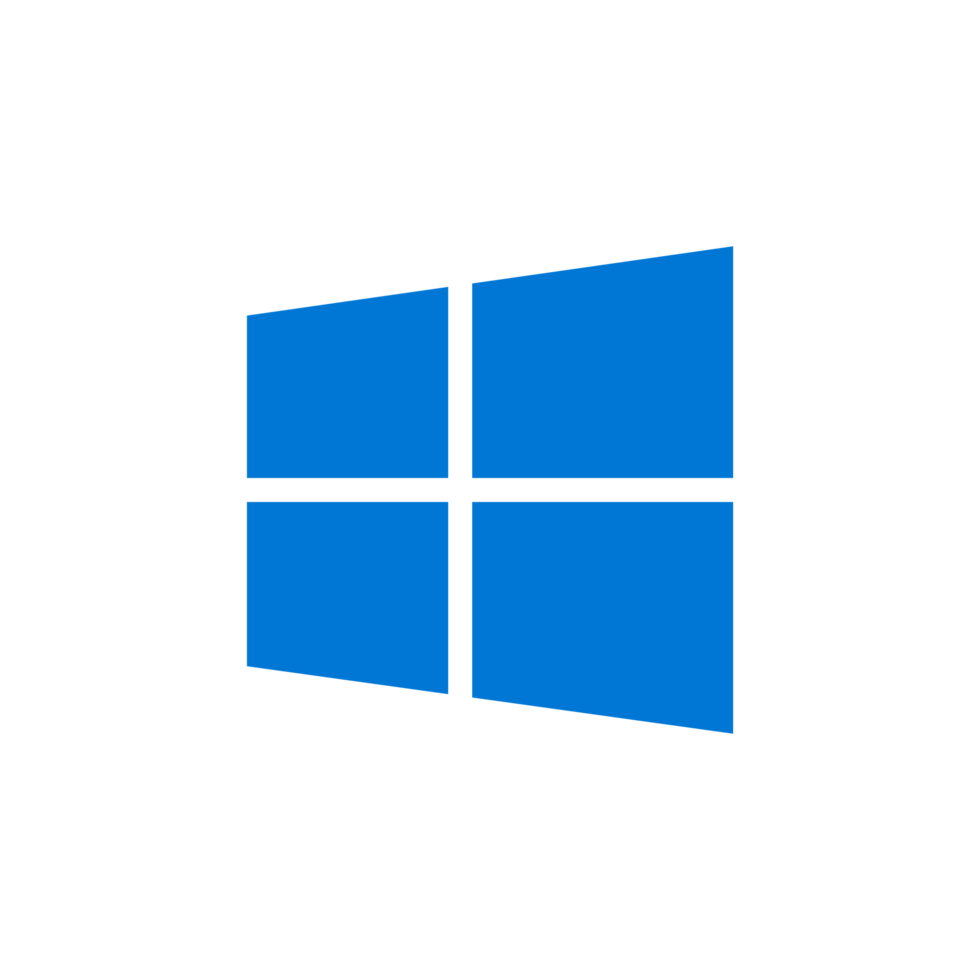
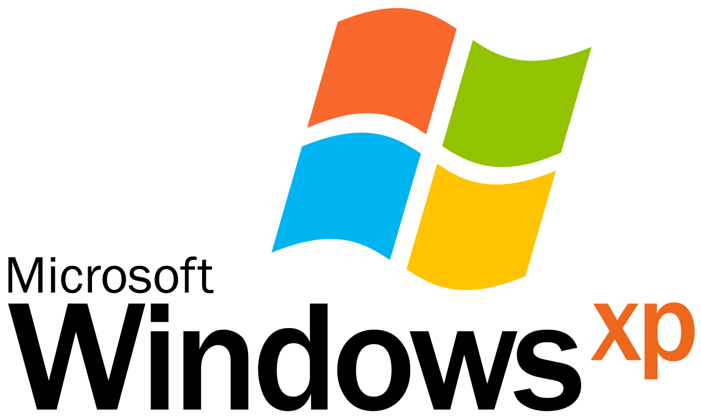

| | | ||||||||
| O Debian é uma das distribuições Linux mais antigas, influentes e respeitadas, criada por Ian Murdock em 1993. Ele é amplamente reconhecido como um "sistema operacional universal", capaz de rodar em diversas arquiteturas de hardware e atender desde estações de trabalho pessoais até servidores robustos. | O Ubuntu é um dos sistemas operacionais baseados em Linux mais populares, conhecidos e utilizados no mundo. Ele é desenvolvido pela Canonical e é amplamente considerado uma excelente "porta de entrada" para iniciantes no mundo Linux, oferecendo um equilíbrio entre facilidade de uso e estabilidade. | ||||||||
| | | ||||||||
| O Fedora Linux é uma distribuição robusta, moderna e de ponta, focada em inovação, segurança e software livre, patrocinada pela Red Hat. Destaca-se por adotar rapidamente novas tecnologias (como Wayland, Btrfs, Flatpak) e ser um ambiente ideal para desenvolvedores, profissionais de TI e entusiastas que buscam softwares atualizados. | O SUSE Linux é uma das distribuições Linux mais antigas, confiáveis e influentes do mundo, com raízes na Alemanha desde 1992. Ele é amplamente reconhecido por sua excelência em ambientes corporativos, servidores e computação em nuvem, sendo conhecido pelo seu mascote, um camaleão chamado "Geeko". | ||||||||
| | ||||||||
| O Gentoo Linux é uma metadistribuição avançada, conhecida por sua extrema flexibilidade e alto desempenho, baseada na compilação de software a partir do código-fonte, otimizada especificamente para o hardware do usuário. Utiliza o sistema de gerenciamento de pacotes Portage, similar aos ports BSD, permitindo controle total sobre as dependências e flags de compilação. | O Red Hat Enterprise Linux (RHEL) é uma distribuição Linux de nível empresarial, líder de mercado, focada em segurança, estabilidade e suporte técnico. Desenvolvido pela Red Hat (agora parte da IBM), ele é ideal para servidores, nuvem, contêineres e ambientes de missão crítica, oferecendo um ciclo de vida de suporte de até 10 anos | ||||||||
|  |  | ||||||||
| O iPadOS é o sistema operacional da Apple desenvolvido especificamente para iPads, lançado em 2019. Diferente do iOS, ele é otimizado para telas maiores, oferecendo multitarefa avançada, suporte a mouse/trackpad, gerenciamento de arquivos (app Arquivos) e maior produtividade. O sistema foca em transformar tablets em ferramentas de trabalho, aproximando-os da experiência de um desktop. | O watchOS é o sistema operacional desenvolvido pela Apple exclusivamente para o Apple Watch. Ele foi criado para funcionar em uma tela pequena e no pulso, focando em saúde, condicionamento físico, conectividade e interações rápidas no dia a dia. | ||||||||
 |  | ||||||||
| O tvOS é o sistema operacional desenvolvido pela Apple especificamente para o aparelho Apple TV (Apple TV HD e Apple TV 4K). Lançado em 2015, ele foi criado com base no iOS (sistema do iPhone), mas otimizado para telas grandes de televisão, oferecendo uma interface fluida, focada em streaming, jogos e aplicativos. | O macOS é o sistema operacional (SO) desenvolvido pela Apple Inc. exclusivamente para sua linha de computadores Mac, incluindo MacBook Air, MacBook Pro, iMac, Mac mini, Mac Studio e Mac Pro. Ele é renomado por sua interface gráfica intuitiva, estabilidade, desempenho robusto e forte foco em segurança e privacidade. | ||||||||
| |  | ||||||||
| O Azure Sphere OS é um sistema operacional baseado em Linux, desenvolvido pela Microsoft para proteger dispositivos IoT (Internet das Coisas). Ele opera sobre chips certificados, oferecendo uma segurança de "raiz de confiança" baseada em hardware, atualizações automáticas via nuvem e segurança em camadas para proteger contra ameaças. | O Windows 10 é um sistema operacional da Microsoft, lançado em 2015 como sucessor do Windows 8.1, focado em unificar a experiência entre computadores, tablets e notebooks. Ele combina a interface clássica (menu Iniciar) com recursos modernos, oferecendo atualizações contínuas, alta segurança (Windows Defender) e compatibilidade com diversos dispositivos. | ||||||||
| |  O Windows 7 é um sistema operacional da Microsoft lançado oficialmente em 22 de outubro de 2009, sucedendo o Windows Vista e antecedendo o Windows 8. Foi amplamente elogiado por corrigir problemas de desempenho e design do seu antecessor, equilibrando simplicidade, estabilidade e beleza, o que o tornou um dos sistemas operacionais mais queridos e duradouros da história da computação. | O Windows XP, lançado pela Microsoft em 2001, foi um sistema operacional revolucionário que unificou as linhas doméstica e corporativa, oferecendo alta estabilidade e uma interface gráfica amigável. Marcado pelo visual azul ("Luna"), destacou-se pela facilidade de uso, suporte a hardware plug-and-play e longa popularidade, com suporte oficial até 2014. | | | | | | | |